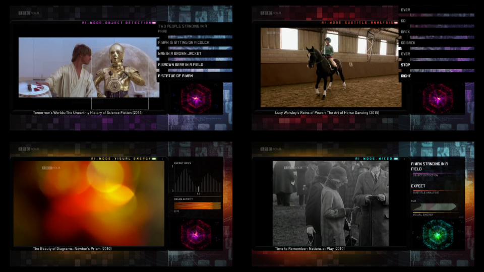
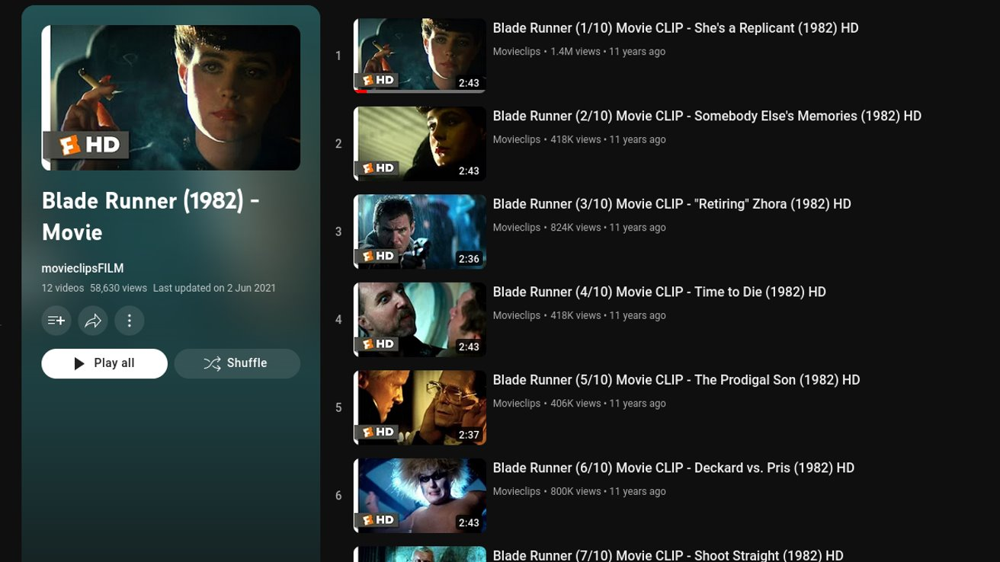
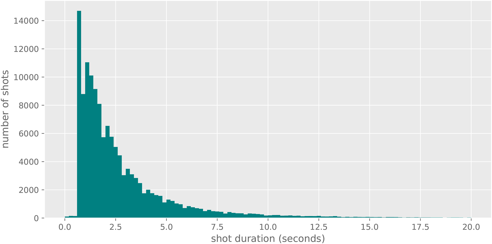
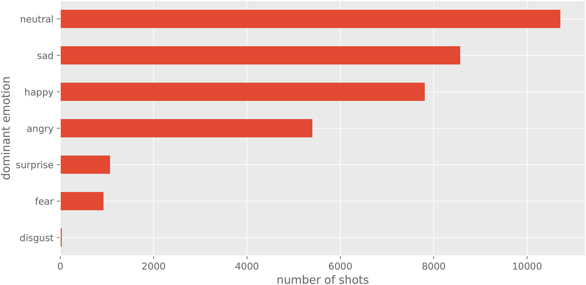

<!DOCTYPE html>
<html lang="en">
  <head>
    <meta charset="utf-8" />
    <meta name="viewport" content="width=device-width, initial-scale=1.0, maximum-scale=1.0, user-scalable=no" />

    <title>La forma del tiempo en el cine</title>
    <link rel="stylesheet" href="dist/reveal.css" />
    <link rel="stylesheet" href="dist/theme/black.css" id="theme" />
    <link rel="stylesheet" href="plugin/highlight/zenburn.css" />
	<link rel="stylesheet" href="css/layout.css" />
	<link rel="stylesheet" href="plugin/customcontrols/style.css">


    <script defer src="dist/fontawesome/all.min.js"></script>

	<script type="text/javascript">
		var forgetPop = true;
		function onPopState(event) {
			if(forgetPop){
				forgetPop = false;
			} else {
				parent.postMessage(event.target.location.href, "app://obsidian.md");
			}
        }
		window.onpopstate = onPopState;
		window.onmessage = event => {
			if(event.data == "reload"){
				window.document.location.reload();
			}
			forgetPop = true;
		}

		function fitElements(){
			const itemsToFit = document.getElementsByClassName('fitText');
			for (const item in itemsToFit) {
				if (Object.hasOwnProperty.call(itemsToFit, item)) {
					var element = itemsToFit[item];
					fitElement(element,1, 1000);
					element.classList.remove('fitText');
				}
			}
		}

		function fitElement(element, start, end){

			let size = (end + start) / 2;
			element.style.fontSize = `${size}px`;

			if(Math.abs(start - end) < 1){
				while(element.scrollHeight > element.offsetHeight){
					size--;
					element.style.fontSize = `${size}px`;
				}
				return;
			}

			if(element.scrollHeight > element.offsetHeight){
				fitElement(element, start, size);
			} else {
				fitElement(element, size, end);
			}		
		}


		document.onreadystatechange = () => {
			fitElements();
			if (document.readyState === 'complete') {
				if (window.location.href.indexOf("?export") != -1){
					parent.postMessage(event.target.location.href, "app://obsidian.md");
				}
				if (window.location.href.indexOf("print-pdf") != -1){
					let stateCheck = setInterval(() => {
						clearInterval(stateCheck);
						window.print();
					}, 250);
				}
			}
	};


        </script>
  </head>
  <body>
    <div class="reveal">
      <div class="slides"><section  data-markdown><script type="text/template"><!-- .slide: class="drop" -->
<div class="" style="position: absolute; left: 0px; top: 0px; height: 1200px; width: 1920px; min-height: 1200px; display: flex; flex-direction: column; align-items: center; justify-content: center" absolute="true">

<section data-background-transition="zoom" data-background-video="https://github.com/chavezheras/slides/raw/main/assets/machine_vision_BG.mp4"
          data-background-video-loop data-background-video-muted data-background-opacity=.2>
          <aside class="notes">
          <p>Gracias a Miguel por la invitación, encantado de estar aquí.</p>
          </aside>
</section>

## La forma del tiempo en el cine
## Topologías de cultura audiovisual


[Dr Daniel Chávez Heras](https://movingpixel.net/)

[movingpixel.net ](https://movingpixel.net/) | [@dchavezheras.bsky.social‬](https://bsky.app/profile/dchavezheras.bsky.social)

Seminario de Estudios de la Cultura Visual del Centro de Investigaciones Interdisciplinarias en Ciencias y Humanidades de la UNAM
</div></script></section><section  data-markdown><script type="text/template"><!-- .slide: class="drop" -->
<div class="" style="position: absolute; left: 0px; top: 0px; height: 1200px; width: 1920px; min-height: 1200px; display: flex; flex-direction: column; align-items: center; justify-content: center" absolute="true">

<split even gap="3">


</split>
</div>

<aside class="notes"><p>In my book I focus on moving images: artefacts in and of motion that structure cognitive and affective responses in their audiences.</p>
<p>The first two moments: two chapter from my new book in which I discuss philosophies of time and temporal dynamics in moving images from a computational perspective. 
I will present a very condensed version the these chapters as a theoretical foundation, as well as ongoing research of how these concepts can be applied in practice.</p>
</aside></script></section><section  data-markdown><script type="text/template"><!-- .slide: class="has-dark-background drop" data-background-color="#2b1804" -->
<div class="" style="position: absolute; left: 0px; top: 0px; height: 1200px; width: 1920px; min-height: 1200px; display: flex; flex-direction: column; align-items: center; justify-content: center" absolute="true">

# Agenda


<split even gap="2">

<div class="callout callout-color8">
<div class="callout-title">
<div class="callout-icon">

<i class="fas fa-list" ></i>


</div>
<div class="callout-title-inner">

1️⃣ Tiempo como archivo 

</div>
</div>
<div class="callout-content">

1. _Made by Machine_

2. _Cinema and Machine Vision_

3. _Distant Viewing_

</div>
</div>


<div class="callout callout-color8">
<div class="callout-title">
<div class="callout-icon">

<i class="fas fa-list" ></i>


</div>
<div class="callout-title-inner">

2️⃣ Tiempo como predicción  

</div>
</div>
<div class="callout-content">

1. Máquinas de imágenes

2. Contando lo invisible

3. Ectocine

</div>
</div>

</split>

> Otros proyectos, preguntas y conversación
</div></script></section><section  data-markdown><script type="text/template"><!-- .slide: class="has-dark-background drop" data-background-color="#992d51" -->
<div class="" style="position: absolute; left: 0px; top: 0px; height: 1200px; width: 1920px; min-height: 1200px; display: flex; flex-direction: column; align-items: center; justify-content: center" absolute="true">

<i class="fas fa-tv fa-5x" color="#b5788d"></i>


# Primera parte
## El tiempo como archivo
</div></script></section><section  data-markdown><script type="text/template"><!-- .slide: class="has-dark-background drop" data-background-color="#304f5e" -->
<div class="" style="position: absolute; left: 0px; top: 0px; height: 1200px; width: 1920px; min-height: 1200px; display: flex; flex-direction: column; align-items: center; justify-content: center" absolute="true">

<i class="fas fa-tv fa-5x" color="teal"></i>


# 1. _Made by Machine_
## _When AI Met the Television Archive_
</div></script></section><section  data-markdown><script type="text/template"><!-- .slide: class="drop" -->
<div class="" style="position: absolute; left: 0px; top: 0px; height: 1200px; width: 1920px; min-height: 1200px; display: flex; flex-direction: column; align-items: center; justify-content: center" absolute="true">


</div>

<aside class="notes"><p>A project in 2018 to &quot;machine-see&quot; the BBC television archive, and &quot;machine-edit&quot; new sequences &quot;television by the meter&quot; ―we jokingly referred to it.</p>
<p>Aired on BBC 4 on September 2018, seen by half a million people in the UK.
It included four sections that corresponded to different computational techniques to traverse the archive: including text analysis over subtitled material, object detection, motion estimation (visual energy), and a mixed between the three (what we would call today a multimodal method).</p>
</aside></script></section><section  data-markdown><script type="text/template"><!-- .slide: class="drop" -->
<div class="" style="position: absolute; left: 0px; top: 0px; height: 1200px; width: 1920px; min-height: 1200px; display: flex; flex-direction: column; align-items: center; justify-content: center" absolute="true">


</div>

<aside class="notes"><p>This was a project in experimental television, in hindsight it was very much of its time, and frankly, as time goes by I am more and more surprised that no one stopped us from doing it. </p>
<p>In light of everything that happened after with AI, this project stands a somewhat of a quaint expression of many of the issues discussed yesterday, from access and copyright, to the role of generative technologies and their impact on screen culture today.</p>
</aside></script></section><section  data-markdown><script type="text/template"><!-- .slide: class="drop" -->
<div class="" style="position: absolute; left: 0px; top: 0px; height: 1200px; width: 1920px; min-height: 1200px; display: flex; flex-direction: column; align-items: center; justify-content: center" absolute="true">


</div></script></section><section  data-markdown><script type="text/template"><!-- .slide: class="drop" -->
<div class="" style="position: absolute; left: 0px; top: 0px; height: 1200px; width: 1920px; min-height: 1200px; display: flex; flex-direction: column; align-items: center; justify-content: center" absolute="true">

<iframe src="https://player.vimeo.com/video/429123060?badge=0&amp;autopause=0&amp;player_id=0&amp;app_id=58479" width="1920" height="1080" frameborder="0" allow="autoplay; fullscreen; picture-in-picture; clipboard-write; encrypted-media" title="1. Made by Machine: Introduction"></iframe>
</div></script></section><section  data-markdown><script type="text/template"><!-- .slide: class="drop" -->
<div class="" style="position: absolute; left: 0px; top: 0px; height: 1200px; width: 1920px; min-height: 1200px; display: flex; flex-direction: column; align-items: center; justify-content: center" absolute="true">

<iframe src="https://player.vimeo.com/video/429123167?badge=0&amp;autopause=0&amp;player_id=0&amp;app_id=58479" width="1920" height="1080" frameborder="0" allow="autoplay; fullscreen; picture-in-picture; clipboard-write; encrypted-media" title="2. MbM: Object Detection"></iframe>
</div></script></section><section  data-markdown><script type="text/template"><!-- .slide: class="drop" -->
<div class="" style="position: absolute; left: 0px; top: 0px; height: 1200px; width: 1920px; min-height: 1200px; display: flex; flex-direction: column; align-items: center; justify-content: center" absolute="true">

<i class="fas fa-quote-left fa-2x fa-pull-left"></i>
too confusing in format (+65) <!-- .element: style="font-size: 47px; display: flex; flex-direction: column; align-items: flex-start; justify-content: space-evenly" align="left" -->

<i class="fas fa-quote-left fa-5x fa-pull-left"></i>
Disjointed (+65) <!-- .element: style="font-size: 47px; display: flex; flex-direction: column; align-items: flex-start; justify-content: space-evenly" align="left" -->

<i class="fas fa-quote-left fa-5x fa-pull-left"></i>
Crud, I turn off after a few minutes as it was difficult to follow and understand (+65) <!-- .element: style="font-size: 47px; display: flex; flex-direction: column; align-items: flex-start; justify-content: space-evenly" align="left" -->

<i class="fas fa-quote-left fa-5x fa-pull-left"></i>
Very strange programme" (55-64) <!-- .element: style="font-size: 47px; display: flex; flex-direction: column; align-items: flex-start; justify-content: space-evenly" align="left" -->

<i class="fas fa-quote-left fa-5x fa-pull-left"></i>
A nice idea using an AI algorythm to select programmes given a seed and watching how the process. Would liked to have known more about the programme used, such as machine language etc" [sic] (55-64) <!-- .element: style="font-size: 47px; display: flex; flex-direction: column; align-items: flex-start; justify-content: space-evenly" align="left" -->

<i class="fas fa-quote-left fa-5x fa-pull-left"></i>
very interesting" (45-54) <!-- .element: style="font-size: 47px; display: flex; flex-direction: column; align-items: flex-start; justify-content: space-evenly" align="left" -->

<i class="fas fa-quote-left fa-5x fa-pull-left"></i>I was intrigued by the concept. I liked the presenter. It was interesting to see how the AI interpreted the film clips and the mistakes it made." (45-54)  <!-- .element: style="font-size: 47px; display: flex; flex-direction: column; align-items: flex-start; justify-content: space-evenly" align="left" -->

<i class="fas fa-quote-left fa-5x fa-pull-left"></i> it's like ocd twitter while watching tv but more interesting (Digital Spy) <!-- .element: style="font-size: 47px; display: flex; flex-direction: column; align-items: flex-start; justify-content: space-evenly" align="left" -->
</div></script></section><section  data-markdown><script type="text/template"><!-- .slide: class="has-dark-background drop" data-background-color="#304f5e" -->
<div class="" style="position: absolute; left: 0px; top: 0px; height: 1200px; width: 1920px; min-height: 1200px; display: flex; flex-direction: column; align-items: center; justify-content: center" absolute="true">

<i class="fas fa-photo-video fa-5x" color="teal"></i>


# 2. _Cinema and Machine Vision_
## Análisis computational de cine y TV
</div></script></section><section  data-markdown><script type="text/template"><!-- .slide: class="drop" -->
<div class="" style="position: absolute; left: 0px; top: 0px; height: 1200px; width: 1920px; min-height: 1200px; display: flex; flex-direction: column; align-items: center; justify-content: center" absolute="true">


</div>

<aside class="notes"><p>Archives are made for humans, datasets are by humans for machines.</p>
<p>Oversimplification: we know machines are made by and for humans too, but still, the purpose of their </p>
<p>Archives are created under a historical impulse; they are organised according to the record-keeping needs of the cultures that build them. This historical impulse requires system that facilitates cataloguing and retrieval, and that aspires to a certain degree of historical accuracy, integrity, and permanence.</p>
<p>Datasets also respond to the sense-making needs of the cultures that build them, but they come together to lay claim on the future more than the past, usually in response to specific problems and questions that need solving, which is to say they are much more instrumental.</p>
<p>In data science and machine learning engineering, datasets tend to be granular, flattened to matrix-like structures whose individual items are not meant to be publicly accessible or even individually meaningful to human observers.</p>
<p>Arguably, contemporary AI has succeeded precisely for not caring at all about whether specific media artefacts are deemed significant enough to go ‘on the record’, and be keept for posterity, with all the cost implications that this kind of collective memory keeping entails, but because of the opposite approach, by voraciously ingesting heaps of data that in themselves were not canonical or significant. </p>
<p>I would got a step further still, and say that archives and datasets produce value in almost opposite ways: while archives endow their constituent artefacts and records with additional symbolic layers, making them stable and tractable, datasets that feed contemporary AI systems atomise these artefacts, stripping them from context in order to make patterns visible through computational processing. In the first case value is produced by stability and addressability, in the second by aggregation and mutability.</p>
</aside></script></section><section  data-markdown><script type="text/template"><!-- .slide: class="drop" -->
<div class="" style="position: absolute; left: 0px; top: 0px; height: 1200px; width: 1920px; min-height: 1200px; display: flex; flex-direction: column; align-items: center; justify-content: center" absolute="true">

## Media as Artefact
### Testimonies & Traces


</div>

<aside class="notes"><p>Mind independent conjecture about mechanical processes in Photography.
Gregory Currie (1999): we treat photographs as traces as opposed to testimonies. The former are counter-­factually dependant on nature, like a
footprint, in a way that the latter are not, like the tale of how I once took a step in the mud.</p>
<p>Time discrete ― Media as record</p>
<ul>
<li>The birth of Media Studies in Anglophone and Francophone academia in the 1960s.<ul>
<li>From communication studies</li>
<li>English and literary studies</li>
<li>Journalism and mass media</li>
</ul>
</li>
</ul>
</aside></script></section><section  data-markdown><script type="text/template"><!-- .slide: class="drop" -->
<div class="" style="position: absolute; left: 0px; top: 0px; height: 1200px; width: 1920px; min-height: 1200px; display: flex; flex-direction: column; align-items: center; justify-content: center" absolute="true">

## Data palimpsests

| Artefact     | Processing level       | Example                                                     |
|--------------|------------------------|-------------------------------------------------------------|
| Cinema       | Social – aggregate     | Popular Hollywood cinema                                    |
| Film         | Human                  | Jurassic Park (1993)                                        |
| Clip         | Human/computer         | Raptors in the Kitchen Scene (https://youtu.be/dnRxQ3dcaQk) |
| Shot         | Human-computer         | 130 frames (5.421 s)                                        |
| Frame        | Computer/human         | Individual frame (512 × 340 pixels)                         |
| Pixels       | Numeric – disaggregate | Vector ([176800x1]); Tensor ([16, 3, 340, 512])             |
</div>

<aside class="notes"><p>Yet, there is a relation between archives and datasets.
Each of the films contained in a film archive can be thought of a dataset of frames, and every frame as dataset of pixels.  Through computing, individual frames and their pixels can relate much more freely, not only to other frames in the same film, but to a multitude of other frames in a multitude of other films, in high-dimensional spaces where every pixel might be put in contact with any other.</p>
<p>This table exemplifies the palimpsest of artefacts and levels of analysis at play between audiovisual archives, comprised of artefacts, and datasets atomised for machine learning operations. The epistemic gap between the two ends of the table are yet to be fully understood in the configuration of a computational archive.</p>
</aside></script></section><section  data-markdown><script type="text/template"><!-- .slide: class="has-dark-background drop" data-background-color="#304f5e" -->
<div class="" style="position: absolute; left: 0px; top: 0px; height: 1200px; width: 1920px; min-height: 1200px; display: flex; flex-direction: column; align-items: center; justify-content: center" absolute="true">

<i class="fas fa-photo-video fa-5x" color="teal"></i>


# 3. _Distant Viewing_

### Formal analysis ➡️ stylometrics ➡️ macroanalysis
</div>

<aside class="notes"><ul>
<li>Epistemic traditions of material culture: mass media, originals and copies, psychology, cultural studies, audience studies, industry studies. <ul>
<li>The study of media artefacts and their interactions with audiences</li>
<li>In Film Studies: formal analysis of film style, film aesthetics, medium specificity theories in the philosophy of art.</li>
<li>Cultural analytics ― data science methods applied to the study of media artefacts, adapted to fit this paradigm: Distant Reading, Distant Viewing, Macroanalysis</li>
</ul>
</li>
</ul>
</aside></script></section><section  data-markdown><script type="text/template"><!-- .slide: class="drop" -->
<div class="" style="position: absolute; left: 0px; top: 0px; height: 1200px; width: 1920px; min-height: 1200px; display: flex; flex-direction: column; align-items: center; justify-content: center" absolute="true">

<i class="fas fa-quote-left fa-2x" ></i>


>One might expect the spectator to be overcome by a physical discomfort akin to sea-
sickness when watching a film that had been composed of different shots. [. . .] Yet 
everyone who goes to the movies knows that actually there is no sense of discomfort 
[. . .] If at one moment we see a long shot of a woman at the back of a room, and the 
next we see a close-up of her face, we simply feel that we have ‘turned over a page’ 
and are looking at a fresh picture.

<i class="fas fa-quote-right fa-2x" ></i>


\- Rudolph Arnheim, 1957
</div>

<aside class="notes"><p>Let me start with a basic question. Why is cinema not incredibly confusing?</p>
<p>In the well known-passage of <em>Film as Art</em> that you see on screen, Arnheim asks precisely why is it, that we are not we completely disoriented by this radical fragmentation of space and time. How do we parse this shattered temporality into a comprehensible whole that we can somehow relate to actual uninterrupted lived duration?</p>
<p>Films are made of a number of small and fragmented recordings, that when organised in a certain way make sense as a whole, and add up to a new kind of synthetic temporality. What we call <strong>cinematic time</strong>.</p>
</aside></script></section><section  data-markdown><script type="text/template"><!-- .slide: class="drop" -->
<div class="" style="position: absolute; left: 0px; top: 0px; height: 1200px; width: 1920px; min-height: 1200px; display: flex; flex-direction: column; align-items: center; justify-content: center" absolute="true">

<section data-background-video="https://github.com/chavezheras/slides/raw/main/assets/Grandmas_Reading_Glass_1900.mp4"
          data-background-video-loop data-background-video-muted>
    <aside class="notes">
          <p>One part of the answer is that this ability to watch films was learned over time. It was not always the case that we knew how to interpret a close up, for example. On screen you see one of the earliest recordings of a close ups in a film. 
		<p>_Grandma's Reading Glass_ (c.1900) by George Albert Smith.
		<p>At the time, the close up was a technical novelty. These early films are demonstrations of technology more than anything else. Through social exposure and continued use over time, techniques like the close up became formal conventions ― the pieces in a larger aesthetic apparatus of cinema.
     </aside>
</section>
</div></script></section><section  data-markdown><script type="text/template"><!-- .slide: class="drop" -->
<div class="" style="position: absolute; left: 0px; top: 0px; height: 1200px; width: 1920px; min-height: 1200px; display: flex; flex-direction: column; align-items: center; justify-content: center" absolute="true">


</div>

<aside class="notes"><p>Using computer vision, we can enlist computers to see these images in our behalf to find some of the patterns that emerge from conventional narrative techniques. For example the shot-reverse-shot, commonly used to depict conversations between characters. Using face detection, it is possible to get a sense of how cinematic discourse is constructed through editing: from wider shots that establish the relations between characters and their environment, progressively in...</p>
</aside></script></section><section  data-markdown><script type="text/template"><!-- .slide: class="drop" -->
<div class="" style="position: absolute; left: 0px; top: 0px; height: 1200px; width: 1920px; min-height: 1200px; display: flex; flex-direction: column; align-items: center; justify-content: center" absolute="true">


</div>

<aside class="notes"><p>...to close ups that show characters&#39; inner states, intentions, and reactions, through their facial expressions. David Bordwell calls this editing style from the general to the particular <em>analytical editing</em>.</p>
</aside></script></section><section  data-markdown><script type="text/template"><!-- .slide: class="drop" -->
<div class="" style="position: absolute; left: 0px; top: 0px; height: 1200px; width: 1920px; min-height: 1200px; display: flex; flex-direction: column; align-items: center; justify-content: center" absolute="true">

## Movie Clips YouTube channel

</div>

<aside class="notes"><p>An archive-like collection that is publicly available online: the <em>Movieclips</em> YouTube channel (<a href="https://journals.sagepub.com/doi/full/10.1177/13548565231174592#bibr29-13548565231174592">2006</a>), which serves as a corpus that is both large and consistent enough to be analysed and intervened using computational methods. </p>
<p>This channel is operated by the American media company <em>Fandango</em>, which owns the popular review aggregator website <em>Rotten Tomatoes</em>, and the recommender platform <em>Flixter</em>, and which is itself jointly owned by the Warner and Universal media conglomerates. </p>
<p>In their YouTube channel <em>Movieclips</em> is described as ‘the largest collection of licensed movie clips on the web’. At the time of writing, it had over 58 million subscribers and almost 60 billion aggregated views. </p>
<p>In terms of access, these numbers dwarf most film archives, but it is important to note that in terms of breadth and diversity, these movie clips are only one deep but thin slice of global film production, namely, recent Hollywood popular cinema licenced by these large media companies.</p>
</aside></script></section><section  data-markdown><script type="text/template"><!-- .slide: class="drop" -->
<div class="" style="position: absolute; left: 0px; top: 0px; height: 1200px; width: 1920px; min-height: 1200px; display: flex; flex-direction: column; align-items: center; justify-content: center" absolute="true">

## Movie Clips Corpus

- 2691 clips 
- 350 films
- From 1931 to 2019
- 287 unique directors
</div></script></section><section  data-markdown><script type="text/template"><!-- .slide: class="drop" -->
<div class="" style="position: absolute; left: 0px; top: 0px; height: 1200px; width: 1920px; min-height: 1200px; display: flex; flex-direction: column; align-items: center; justify-content: center" absolute="true">

## Pre-trained FER detection 


</div></script></section><section  data-markdown><script type="text/template"><!-- .slide: class="drop" -->
<div class="" style="position: absolute; left: 0px; top: 0px; height: 1200px; width: 1920px; min-height: 1200px; display: flex; flex-direction: column; align-items: center; justify-content: center" absolute="true">

## Shot scale detector


</div></script></section><section  data-markdown><script type="text/template"><!-- .slide: class="drop" -->
<div class="" style="position: absolute; left: 0px; top: 0px; height: 1200px; width: 1920px; min-height: 1200px; display: flex; flex-direction: column; align-items: center; justify-content: center" absolute="true">

## Feature Engineering

|Feature|Value|
|:----|:----|
|People|1|
|Scale|23.2|
|Inferred motion|0.24|
|Scale category|‘CU’|
|Inferred motion category|‘Stable’|
|Top emotion|‘Angry’|
|Top emotion confidence|0.79|
</div></script></section><section  data-markdown><script type="text/template"><!-- .slide: class="drop" -->
<div class="" style="position: absolute; left: 0px; top: 0px; height: 1200px; width: 1920px; min-height: 1200px; display: flex; flex-direction: column; align-items: center; justify-content: center" absolute="true">

## Shot duration distribution


</div>

<aside class="notes"><p>conventional statistics give overview of this dataset of shots</p>
</aside></script></section><section  data-markdown><script type="text/template"><!-- .slide: class="drop" -->
<div class="" style="position: absolute; left: 0px; top: 0px; height: 1200px; width: 1920px; min-height: 1200px; display: flex; flex-direction: column; align-items: center; justify-content: center" absolute="true">

## Shot scale breakdown


</div>

<aside class="notes"><p>more sophisticated tools to do this now, like Cineshot deep learning method to find shot scale in films</p>
</aside></script></section><section ><section data-markdown><script type="text/template"><!-- .slide: class="drop" -->
<div class="" style="position: absolute; left: 0px; top: 0px; height: 1200px; width: 1920px; min-height: 1200px; display: flex; flex-direction: column; align-items: center; justify-content: center" absolute="true">

## Shot emotion breakdown


</div>

<aside class="notes"><p>the obvious caveats of this is the simplification of emotions to few categories, an approach that has been criticised and widely updated in psychology.</p>
</aside></script></section><section data-markdown><script type="text/template"><!-- .slide: class="drop" -->
<div class="" style="position: absolute; left: 0px; top: 0px; height: 1200px; width: 1920px; min-height: 1200px; display: flex; flex-direction: column; align-items: center; justify-content: center" absolute="true">

## Supercuts


>Just as capitalism treated workers as machines as a prelude to workers being replaced by machines, so also supercutters simulate database thinking in apparent anticipation of a moment, perhaps in the near future, when **neural networks will be able to search the entirety of digitized film history and create supercuts themselves, automatically**.

\- Max Tohline, 2021


>In the near future there will be a simple software or app, feeding its algorithm with keywords and other elements of interest, which will **automatically generate a perfect supercut of media content of any kind within a blink of an eye**.

\- Miklós Kiss, 2013
</div>

<aside class="notes"><p>a supercut is an editing technique in which short video clips with common motifs or salient stylistic characteristics are extracted from their original context and are sequenced together in a montage. The commonalities are highlighted through repetition and interpreted by viewers as a form of <em>aboutness</em>, which then becomes the thematic content of the supercut.</p>
<p>The supercut entails not simply a mode of editing, but a mode of thinking expressed by a mode of editing.</p>
</aside></script></section><section data-markdown><script type="text/template"><!-- .slide: class="drop" -->
<div class="" style="position: absolute; left: 0px; top: 0px; height: 1200px; width: 1920px; min-height: 1200px; display: flex; flex-direction: column; align-items: center; justify-content: center" absolute="true">

## Computational supercuts


<iframe title="vimeo-player" src="https://player.vimeo.com/video/830237949?h=5fb9301c4d" width="1500" height="1250" frameborder="0"    allowfullscreen></iframe>
</div>

<aside class="notes"><p>This was made using a tool called VGREP, developed by artist and creative coder Sam Lavigne as part of a small project funded through a small grant I got last year to explore computational media formats.</p>
<p>The tool takes a video file as an input, transcribes its dialogue, and then analyses the text to find common ngrams. These can then selected and edited as a supercut.</p>
<p>The lecture was called &quot;Modeling Doubt, Coding Humility&quot; and through this technique I found there were many more mentions of doubt than of coding or humility (the lecture however was ver good).</p>
<p>I wanted to take this idea a step forward and see if a similar effect could be achieved by operating directly on the images, automating a supercut of visual characteristics.</p>
</aside></script></section><section data-markdown><script type="text/template"><!-- .slide: class="drop" -->
<div class="" style="position: absolute; left: 0px; top: 0px; height: 1200px; width: 1920px; min-height: 1200px; display: flex; flex-direction: column; align-items: center; justify-content: center" absolute="true">

## Shot scale supercut
<iframe src="https://player.vimeo.com/video/602000956?h=71ac4fdc22" width="1500" height="1250" frameborder="0" allow="autoplay; fullscreen; picture-in-picture" allowfullscreen></iframe>
<p><a href="https://vimeo.com/602000956">Big Angry Faces v.01</a> from <a href="https://vimeo.com/chavezheras">Daniel Ch&aacute;vez Heras</a> on <a href="https://vimeo.com">Vimeo</a>.</p>
</div>

<aside class="notes"><p>On the one  hand the computational supercut involves applying computer vision methods to annotate large collections of moving images to find patterns, much in the guise of cultural analytics. </p>
<p>But on the other, as well as plotting these images in space to view them at a distance, to make sense of them we need to reinscribe these patterns in time, giving data objects a duration again, and enabling interpretation through the familiar operations of montage and the syntactic and synoptic apparatus of (dis)continuity as a modality for meaning making and explanation. </p>
<p>The kind of reverse editing proposed in the computational supercut links in this way analytical and creative epistemic strategies: knowledge and value created through the making and unmaking of moving imagery; visual culture that feeds AI that feeds back into visual culture.&gt;)</p>
</aside></script></section><section data-markdown><script type="text/template"><!-- .slide: class="drop" -->
<div class="" style="position: absolute; left: 0px; top: 0px; height: 1200px; width: 1920px; min-height: 1200px; display: flex; flex-direction: column; align-items: center; justify-content: center" absolute="true">


</div>

<aside class="notes"><p>I have experimented further with this type of parametric sampling/editing, and some of these experiments can be found online. If there is enough interest I might develop the technique further and might distribute it as a tool that can be used in other collections.</p>
</aside></script></section></section><section  data-markdown><script type="text/template"><!-- .slide: class="has-dark-background drop" data-background-color="#992d51" -->
<div class="" style="position: absolute; left: 0px; top: 0px; height: 1200px; width: 1920px; min-height: 1200px; display: flex; flex-direction: column; align-items: center; justify-content: center" absolute="true">

<i class="fas fa-dice-d20 fa-5x" color="#b5788d"></i>


# Segunda parte
## El tiempo como predicción
</div></script></section><section  data-markdown><script type="text/template"><!-- .slide: class="has-dark-background drop" data-background-color="#304f5e" -->
<div class="" style="position: absolute; left: 0px; top: 0px; height: 1200px; width: 1920px; min-height: 1200px; display: flex; flex-direction: column; align-items: center; justify-content: center" absolute="true">

<i class="fas fa-dice-d20 fa-5x" color="teal"></i>


# 1. Máquinas hechas de imágenes
</div></script></section><section  data-markdown><script type="text/template"><!-- .slide: class="drop" -->
<div class="" style="position: absolute; left: 0px; top: 0px; height: 1200px; width: 1920px; min-height: 1200px; display: flex; flex-direction: column; align-items: center; justify-content: center" absolute="true">

<iframe width="1080" height="768" src="https://www.youtube.com/embed/CNIlqJctA_I?si=hassiNEby7XizlFS" title="YouTube video player" frameborder="0" allow="accelerometer; autoplay; clipboard-write; encrypted-media; gyroscope; picture-in-picture; web-share" referrerpolicy="strict-origin-when-cross-origin" allowfullscreen></iframe>
</div>

<aside class="notes"><p>Benjamin Desai is a creative technologist and digital artist focused on AR and cofounder of Radical Realities, an award-winning immersive studio.  “Excited to share this imaginative look into an alternate past powered by Sora. Blending early 20th-century film aesthetics with whimsical scenarios and placing animals in unexpected roles. This work aims to ignite a sense of wonder while showcasing the potential of today&#39;s technology. Creating with Sora is still an experimental process, involving a lot of iteration and fine-tuning. It&#39;s much more of a human-AI collaboration than a magic button solution. Check out these fascinating animals and the joy of asking &#39;what if?&#39;”</p>
<p>Analytic and generative approaches in computing tend to be split between scientific and creative domains, with their respective tools and communities of practice.</p>
<p>Deployed as analytical engines, computers can be used to find patterns across vast collections of imagery, and these patterns are often expressed as relations of proximity in space. We have seen examples of this yesterday in multiple way of projecting archives onto 2d or 3d spaces.</p>
<p>The image in this slide shows a t-SNE mapping of a collection of soviet news reels. The dataset and the tool were developed by colleagues in CUDAN from the cultural data analytics lab in Tallinn, Estonia.</p>
<p>But to amount to knowledge, these spatial correlations require interpretation and explanation, which require relations of necessity, not just proximity, and tend to unfold sequentially, as researchers, critics and users seek to organise these patterns to infer causal relations and plausible reasons for data objects and events to be organised in space the way they are.</p>
<p>By coupling an analytical engine with a generative one, computing can be used to configure narratives about these proximity patterns and enable explanatory propositions through compositional techniques familiar to media scholarship.</p>
<p>Media as Calculation
Counting the invisible</p>
</aside></script></section><section  data-markdown><script type="text/template"><!-- .slide: class="has-dark-background drop" data-background-color="#304f5e" -->
<div class="" style="position: absolute; left: 0px; top: 0px; height: 1200px; width: 1920px; min-height: 1200px; display: flex; flex-direction: column; align-items: center; justify-content: center" absolute="true">

<i class="fas fa-dice-d20 fa-5x" color="teal"></i>


# 2. Contando lo invisible
</div></script></section><section  data-markdown><script type="text/template"><!-- .slide: class="drop" -->
<div class="" style="position: absolute; left: 0px; top: 0px; height: 1200px; width: 1920px; min-height: 1200px; display: flex; flex-direction: column; align-items: center; justify-content: center" absolute="true">


</div>

<aside class="notes"><p>In the case of moving images, these relations are always relations of difference and similarity, and the range in between.</p>
<p>Films in particular elicit a peculiar hybrid modality of vision; this is I believe one of the 
main reasons for cinema&#39;s enduring erotic appeal. Films can fork time by splicing and (re)presenting discontinuous sequences of events at the level of shots. But each frame in every shot is tightly bound in a continuous sequence that is internally and mechanistically structured; frames cannot elude their strong bonds with each other without ceasing to be frames. We trust films as recordings of past duration because of the strong relations 
between frames.</p>
<p>I&#39;m going to show you a clip.</p>
</aside></script></section><section  data-markdown><script type="text/template"><!-- .slide: class="drop" -->
<div class="" style="position: absolute; left: 0px; top: 0px; height: 1200px; width: 1920px; min-height: 1200px; display: flex; flex-direction: column; align-items: center; justify-content: center" absolute="true">

<iframe src="https://player.vimeo.com/video/891638449?h=04f28f14e2&title=0&byline=0&portrait=0" width="1500" height="813" frameborder="0" allow="autoplay; fullscreen; picture-in-picture" allowfullscreen></iframe>
</div>

<aside class="notes"></aside></script></section><section  data-markdown><script type="text/template"><!-- .slide: class="drop" -->
<div class="" style="position: absolute; left: 0px; top: 0px; height: 1200px; width: 1920px; min-height: 1200px; display: flex; flex-direction: column; align-items: center; justify-content: center" absolute="true">


</div>

<aside class="notes"><p>per-frame difference time series</p>
</aside></script></section><section  data-markdown><script type="text/template"><!-- .slide: class="drop" -->
<div class="" style="position: absolute; left: 0px; top: 0px; height: 1200px; width: 1920px; min-height: 1200px; display: flex; flex-direction: column; align-items: center; justify-content: center" absolute="true">


</div>

<aside class="notes"><p>maximum and minimum differences between frames</p>
</aside></script></section><section  data-markdown><script type="text/template"><!-- .slide: class="drop" -->
<div class="" style="position: absolute; left: 0px; top: 0px; height: 1200px; width: 1920px; min-height: 1200px; display: flex; flex-direction: column; align-items: center; justify-content: center" absolute="true">

### Computational Burch


</div>

<aside class="notes"><p>Temporal structure in film is usually broken down analytically into sequences, scenes, and shots. These are units with which filmmakers and film editors design an intelligible whole from a pool of possible parts, most often recorded in various locations at separate times and in a different order.
Bong Joon-­Ho and Herzog</p>
<p>With a background in music, Burch classifies the ways in which a film can be edited by identifying all possible space-­time articulations that describe a minimal relation that exists between any two consecutive shots, like the ‘notes’ of a film.</p>
<p>A set of formal ‘objects’ – the fifteen different types of shot transitions and the
parameters that define ­them – capable of rigorous development through such devices as rhythmic alternation, recapitulation, retrogression, gradual elimination, cyclical repetition, and serial variation, thus creating structures similar to those of
twelve-­tone music. (Burch, 1981, p. 14)</p>
</aside></script></section><section  data-markdown><script type="text/template"><!-- .slide: class="drop" -->
<div class="" style="position: absolute; left: 0px; top: 0px; height: 1200px; width: 1920px; min-height: 1200px; display: flex; flex-direction: column; align-items: center; justify-content: center" absolute="true">


</div></script></section><section  data-markdown><script type="text/template"><!-- .slide: class="drop" -->
<div class="" style="position: absolute; left: 0px; top: 0px; height: 1200px; width: 1920px; min-height: 1200px; display: flex; flex-direction: column; align-items: center; justify-content: center" absolute="true">

<split even gap="3">


</split>
</div>

<aside class="notes"><p>difference in time and space articulations</p>
</aside></script></section><section  data-markdown><script type="text/template"><!-- .slide: class="drop" -->
<div class="" style="position: absolute; left: 0px; top: 0px; height: 1200px; width: 1920px; min-height: 1200px; display: flex; flex-direction: column; align-items: center; justify-content: center" absolute="true">


</div>

<aside class="notes"><p>At the same time, we admit film&#39;s capacity to dilate and compress time at the level of shots and sequences. The interplay between these two properties makes films both structured and elastic, mechanistically bound but expressively designed. </p>
<p>At this micro level, we can recognise at least two types of differences: strong higher but small differences between continuous frames, and weak but larger differences in contiguous shots. High frequency, small variation vs lower frequency and higher variation.</p>
<p>I&#39;m going to show you a clip</p>
</aside></script></section><section  data-markdown><script type="text/template"><!-- .slide: class="drop" -->
<div class="" style="position: absolute; left: 0px; top: 0px; height: 1200px; width: 1920px; min-height: 1200px; display: flex; flex-direction: column; align-items: center; justify-content: center" absolute="true">

<iframe src="https://player.vimeo.com/video/891639772?h=ca398e90d7&title=0&byline=0&portrait=0" width="1500" height="816" frameborder="0" allow="autoplay; fullscreen; picture-in-picture" allowfullscreen></iframe>
</div>

<aside class="notes"></aside></script></section><section  data-markdown><script type="text/template"><!-- .slide: class="drop" -->
<div class="" style="position: absolute; left: 0px; top: 0px; height: 1200px; width: 1920px; min-height: 1200px; display: flex; flex-direction: column; align-items: center; justify-content: center" absolute="true">


</div>

<aside class="notes"></aside></script></section><section  data-markdown><script type="text/template"><!-- .slide: class="drop" -->
<div class="" style="position: absolute; left: 0px; top: 0px; height: 1200px; width: 1920px; min-height: 1200px; display: flex; flex-direction: column; align-items: center; justify-content: center" absolute="true">


</div>

<aside class="notes"><p>These differences over time are perceived, interpreted, and felt, even if they are not consciously processed.</p>
<p>Is not that we &quot;see&quot; these images in our minds eye, but rather that these images can used a proxy to visualise perceptual change. A kind of computational phenomenology of moving images.</p>
</aside></script></section><section  data-markdown><script type="text/template"><!-- .slide: class="has-dark-background drop" data-background-color="#304f5e" -->
<div class="" style="position: absolute; left: 0px; top: 0px; height: 1200px; width: 1920px; min-height: 1200px; display: flex; flex-direction: column; align-items: center; justify-content: center" absolute="true">

<i class="fas fa-dice-d20 fa-5x" color="teal"></i>


# 3. Ectocine
### Atomisation ➡️ Vectorisation ➡️ Compression
</div>

<aside class="notes"><p>Time as change --&gt; continuity, contiguity
Culture-2-Vec
Complex media as in complex systems science:</p>
<ul>
<li>self organisation</li>
<li>complex behaviour emerges from simple rules</li>
<li>agent-based modelling</li>
<li>large-scale simulation
Inspired by physics (block time) and cellular biology (cellular automata)
Joint representational spaces</li>
</ul>
</aside></script></section><section  data-markdown><script type="text/template"><!-- .slide: class="drop" -->
<div class="" style="position: absolute; left: 0px; top: 0px; height: 1200px; width: 1920px; min-height: 1200px; display: flex; flex-direction: column; align-items: center; justify-content: center" absolute="true">

<section data-background-video="https://collection-space-navigator.github.io/static/videos/projection_compression2.mp4"
          data-background-video-loop data-background-video-muted>
    <aside class="notes">
          <p>CSN Collection space navigator, changing between multiple data projections.</p>
     </aside>
</section>
</div></script></section><section ><section data-markdown><script type="text/template"><!-- .slide: class="drop" -->
<div class="" style="position: absolute; left: 0px; top: 0px; height: 1200px; width: 1920px; min-height: 1200px; display: flex; flex-direction: column; align-items: center; justify-content: center" absolute="true">

<i class="fas fa-quote-left fa-2x" ></i>


>Editing a picture correctly, competently, means allowing the separate scenes and shots to come together spontaneously, for in a sense they edit themselves; they join up according to their own intrinsic pattern [. . .] Rhythm, then, is not the metrical sequence of pieces; what makes it is the time-thrust within frames. And I am convinced that it is rhythm and not editing, as people tend to think, that is the main formative element of cinema. 

<i class="fas fa-quote-right fa-2x" ></i>


\- Andrei Tarkovsky, 1989
</div>

<aside class="notes"><p>Soviet montage theorists, from Kuleshov to Pudovkin to Eisenstein, argued that that cinematic time is produced when filmmakers design an imagined relation between shots. And from this perspective, every shot presents the filmmaker with an opportunity to break and re-couple time and space in ways that create particular aesthetic effects. </p>
<p>Tarkovsky points to this strange notion of a film that edits itself, I think this is time as an emergent property, something that arises synthetically from tiny local differences into more complex structures.</p>
</aside></script></section><section data-markdown><script type="text/template"><!-- .slide: class="drop" -->
<div class="" style="position: absolute; left: 0px; top: 0px; height: 1200px; width: 1920px; min-height: 1200px; display: flex; flex-direction: column; align-items: center; justify-content: center" absolute="true">


</div></script></section></section><section  data-markdown><script type="text/template"><!-- .slide: class="drop" -->
<div class="" style="position: absolute; left: 0px; top: 0px; height: 1200px; width: 1920px; min-height: 1200px; display: flex; flex-direction: column; align-items: center; justify-content: center" absolute="true">

### Experiments with Open AI ― [Ryan Heuser](https://www.cdh.cam.ac.uk/about/people/dr-ryan-heuser/)


</div></script></section><section  data-markdown><script type="text/template"><!-- .slide: class="drop" -->
<div class="" style="position: absolute; left: 0px; top: 0px; height: 1200px; width: 1920px; min-height: 1200px; display: flex; flex-direction: column; align-items: center; justify-content: center" absolute="true">


</div></script></section><section  data-markdown><script type="text/template"><!-- .slide: class="drop" -->
<div class="" style="position: absolute; left: 0px; top: 0px; height: 1200px; width: 1920px; min-height: 1200px; display: flex; flex-direction: column; align-items: center; justify-content: center" absolute="true">


</div></script></section><section  data-markdown><script type="text/template"><!-- .slide: class="drop" -->
<div class="" style="position: absolute; left: 0px; top: 0px; height: 1200px; width: 1920px; min-height: 1200px; display: flex; flex-direction: column; align-items: center; justify-content: center" absolute="true">


</div></script></section><section  data-markdown><script type="text/template"><!-- .slide: class="drop" -->
<div class="" style="position: absolute; left: 0px; top: 0px; height: 1200px; width: 1920px; min-height: 1200px; display: flex; flex-direction: column; align-items: center; justify-content: center" absolute="true">

<iframe width="1000" height="562.5" src="https://www.youtube.com/embed/d-kcczAff40?si=KVAB9XCOD_FA2VH-" title="YouTube video player" frameborder="0" allow="accelerometer; autoplay; clipboard-write; encrypted-media; gyroscope; picture-in-picture; web-share" referrerpolicy="strict-origin-when-cross-origin" allowfullscreen></iframe>
</div></script></section><section  data-markdown><script type="text/template"><!-- .slide: class="drop" -->
<div class="" style="position: absolute; left: 0px; top: 0px; height: 1200px; width: 1920px; min-height: 1200px; display: flex; flex-direction: column; align-items: center; justify-content: center" absolute="true">

### Experiments with Qwen and SMOL ― [Geoffroy Noël](https://kdl.kcl.ac.uk/about/people/geoffroy-noel/)


</div>

<aside class="notes"><p>Experiments with video question answering tasks using vision language models on video input.</p>
<p>Environment: Nvidia 4090 (24GB), 128GB RAM, AMD Ryzen Threadripper 1950X 16-Core Processor, Ubuntu 22.04, CUDA 12.2 (KDL machine). And then A100 using CREATE</p>
</aside></script></section><section  data-markdown><script type="text/template"><!-- .slide: class="drop" -->
<div class="" style="position: absolute; left: 0px; top: 0px; height: 1200px; width: 1920px; min-height: 1200px; display: flex; flex-direction: column; align-items: center; justify-content: center" absolute="true">

<div class="" style="position: absolute; left: 10%; top: 20%; height: 60%; width: 80%; display: flex; flex-direction: column; align-items: center; justify-content: center" >


<div class="callout callout-color1">
<div class="callout-title">
<div class="callout-icon">

<i class="fas fa-info-circle" ></i>


</div>
<div class="callout-title-inner">

Prompt

</div>
</div>
<div class="callout-content">

Summarise in one sentence the narrative content of the clip.

</div>
</div>

<div class="callout callout-color9">
<div class="callout-title">
<div class="callout-icon">

<i class="fas fa-quote-left" ></i>


</div>
<div class="callout-title-inner">

Response

</div>
</div>
<div class="callout-content">

A man in a suit explores an art museum, admiring paintings and sculptures, before meeting another man who hands him a document.

</div>
</div>

</div>
</div></script></section><section  data-markdown><script type="text/template"><!-- .slide: class="drop" -->
<div class="" style="position: absolute; left: 0px; top: 0px; height: 1200px; width: 1920px; min-height: 1200px; display: flex; flex-direction: column; align-items: center; justify-content: center" absolute="true">

<div class="" style="position: absolute; left: 10%; top: 20%; height: 60%; width: 80%; display: flex; flex-direction: column; align-items: center; justify-content: center" >


<div class="callout callout-color1">
<div class="callout-title">
<div class="callout-icon">

<i class="fas fa-info-circle" ></i>


</div>
<div class="callout-title-inner">

Prompt

</div>
</div>
<div class="callout-content">

What is visually similar between the painting of the lady and what is in front of that painting?

</div>
</div>

<div class="callout callout-color9">
<div class="callout-title">
<div class="callout-icon">

<i class="fas fa-quote-left" ></i>


</div>
<div class="callout-title-inner">

Response

</div>
</div>
<div class="callout-content">

The visual similarity between the painting of the lady and the woman sitting on the bench in the museum is the hairstyle. The woman in the painting has her hair styled in an elegant updo, which closely resembles the hairstyle of the woman sitting on the bench. Both women have their hair neatly arranged, with curls or waves framing their faces, giving them a sophisticated look.

</div>
</div>

</div>
</div></script></section><section  data-markdown><script type="text/template"><!-- .slide: class="drop" -->
<div class="" style="position: absolute; left: 0px; top: 0px; height: 1200px; width: 1920px; min-height: 1200px; display: flex; flex-direction: column; align-items: center; justify-content: center" absolute="true">

<div class="" style="position: absolute; left: 10%; top: 20%; height: 60%; width: 80%; display: flex; flex-direction: column; align-items: center; justify-content: center" >


<div class="callout callout-color1">
<div class="callout-title">
<div class="callout-icon">

<i class="fas fa-info-circle" ></i>


</div>
<div class="callout-title-inner">

Prompt

</div>
</div>
<div class="callout-content">

Localize a series of activity events in the video, output the start and end timestamp for each event, and describe each event with sentences. Provide the result in json format with 'mm:ss.ff' format for time depiction.

</div>
</div>

<div class="callout callout-color9">
<div class="callout-title">
<div class="callout-icon">

<i class="fas fa-quote-left" ></i>


</div>
<div class="callout-title-inner">

Response

</div>
</div>
<div class="callout-content">

{"start_time": "00:00.00", "end_time": "00:15.20", "description": "A man walks through an archway into a building, passing a car parked outside."},

{"start_time": "00:15.20", "end_time": "00:34.80", "description": "The man enters a grand hall with columns and a statue, walking towards a room filled with paintings and tapestries."} [...]

</div>
</div>

</div>
</div></script></section><section  data-markdown><script type="text/template"><!-- .slide: class="drop" -->
<div class="" style="position: absolute; left: 0px; top: 0px; height: 1200px; width: 1920px; min-height: 1200px; display: flex; flex-direction: column; align-items: center; justify-content: center" absolute="true">


</div></script></section><section  data-markdown><script type="text/template"><!-- .slide: class="drop" -->
<div class="" style="position: absolute; left: 0px; top: 0px; height: 1200px; width: 1920px; min-height: 1200px; display: flex; flex-direction: column; align-items: center; justify-content: center" absolute="true">


</div></script></section><section  data-markdown><script type="text/template"><!-- .slide: class="has-dark-background drop" data-background-color="#992d51" -->
<div class="" style="position: absolute; left: 0px; top: 0px; height: 1200px; width: 1920px; min-height: 1200px; display: flex; flex-direction: column; align-items: center; justify-content: center" absolute="true">

<i class="fas fa-tv fa-5x" color="#b5788d"></i>


# Otros proyectos

## ISSA & ARCAM-net
</div></script></section><section  data-markdown><script type="text/template"><!-- .slide: class="drop" -->
<div class="" style="position: absolute; left: 0px; top: 0px; height: 1200px; width: 1920px; min-height: 1200px; display: flex; flex-direction: column; align-items: center; justify-content: center" absolute="true">

<split even gap="2">


</split>
</div>

<aside class="notes"><p>This UK-wide project enables critical and technical exploration of artificial intelligence technologies in the screen sector, focusing on moving image archives in the UK. ISSA was funded by the British Film Institute, it brings together five film and television archive partners across the four UK nations to develop the knowledge, tools, and skills required to rethink large audiovisual collections from a computational perspective. ISSA has a significant R&amp;D component that includes state of the art computational techniques such as retrieval augmented generation, metadata enrichment, and high-dimensional data projection and visualisation, bridging the gap between domain-specific archives and emerging AI applications. ISSA demonstrates the PI’s ability to successfully lead an interdisciplinary research team.</p>
</aside></script></section><section  data-markdown><script type="text/template"><!-- .slide: class="has-light-background drop" data-background-color="#ffffff" -->
<div class="" style="position: absolute; left: 0px; top: 0px; height: 1200px; width: 1920px; min-height: 1200px; display: flex; flex-direction: column; align-items: center; justify-content: center" absolute="true">

<split even gap="2">


</split>
</div>

<aside class="notes"><p>The International Network for Advanced Research on Computational Audiovisual Media (ARCAM-net) </p>
<p>38 scholars and practitioners from 20 countries, including academic research groups, heritage institutions, media companies, to collaborate towards shared research agenda. </p>
<p>The network received funding under the COST Action programme of the European Union.</p>
</aside></script></section><section  data-markdown><script type="text/template"><!-- .slide: class="drop" -->
<div class="" style="position: absolute; left: 0px; top: 0px; height: 1200px; width: 1920px; min-height: 1200px; display: flex; flex-direction: column; align-items: center; justify-content: center" absolute="true">

<section data-background-transition="zoom" data-background-video="https://github.com/chavezheras/slides/raw/main/assets/machine_vision_BG.mp4" data-background-video-loop data-background-video-muted>


<h2 class="r-fit-text"><mark> · Preguntas ·  </mark></h2>

  <aside class="notes">
   
  </aside>

</section>
</div></script></section></div>
    </div>

    <script src="dist/reveal.js"></script>

    <script src="plugin/markdown/markdown.js"></script>
    <script src="plugin/highlight/highlight.js"></script>
    <script src="plugin/zoom/zoom.js"></script>
    <script src="plugin/notes/notes.js"></script>
    <script src="plugin/math/math.js"></script>
	<script src="plugin/mermaid/mermaid.js"></script>
	<script src="plugin/chart/chart.min.js"></script>
	<script src="plugin/chart/plugin.js"></script>
	<script src="plugin/customcontrols/plugin.js"></script>

    <script>
      function extend() {
        var target = {};
        for (var i = 0; i < arguments.length; i++) {
          var source = arguments[i];
          for (var key in source) {
            if (source.hasOwnProperty(key)) {
              target[key] = source[key];
            }
          }
        }
        return target;
      }

	  function isLight(color) {
		let hex = color.replace('#', '');

		// convert #fff => #ffffff
		if(hex.length == 3){
			hex = `${hex[0]}${hex[0]}${hex[1]}${hex[1]}${hex[2]}${hex[2]}`;
		}

		const c_r = parseInt(hex.substr(0, 2), 16);
		const c_g = parseInt(hex.substr(2, 2), 16);
		const c_b = parseInt(hex.substr(4, 2), 16);
		const brightness = ((c_r * 299) + (c_g * 587) + (c_b * 114)) / 1000;
		return brightness > 155;
	}

	var bgColor = getComputedStyle(document.documentElement).getPropertyValue('--r-background-color').trim();
	var isLight = isLight(bgColor);

	if(isLight){
		document.body.classList.add('has-light-background');
	} else {
		document.body.classList.add('has-dark-background');
	}

      // default options to init reveal.js
      var defaultOptions = {
        controls: true,
        progress: true,
        history: true,
        center: true,
        transition: 'default', // none/fade/slide/convex/concave/zoom
        plugins: [
          RevealMarkdown,
          RevealHighlight,
          RevealZoom,
          RevealNotes,
          RevealMath.MathJax3,
		  RevealMermaid,
		  RevealChart,
		  RevealCustomControls,
        ],


    	allottedTime: 120 * 1000,

		mathjax3: {
			mathjax: 'plugin/math/mathjax/tex-mml-chtml.js',
		},
		markdown: {
		  gfm: true,
		  mangle: true,
		  pedantic: false,
		  smartLists: false,
		  smartypants: false,
		},

		mermaid: {
			theme: isLight ? 'default' : 'dark',
		},

		customcontrols: {
			controls: [
				{id: 'toggle-overview',
				title: 'Toggle overview (O)',
				icon: '<i class="fa fa-th"></i>',
				action: 'Reveal.toggleOverview();'
				},
			]
		},
      };

      // options from URL query string
      var queryOptions = Reveal().getQueryHash() || {};

      var options = extend(defaultOptions, {"width":1920,"height":1200,"margin":0,"controls":true,"progress":true,"slideNumber":true,"transition":"slide","transitionSpeed":"default"}, queryOptions);
    </script>

    <script>
      Reveal.initialize(options);
    </script>
  </body>

  <!-- created with Advanced Slides -->
</html>
